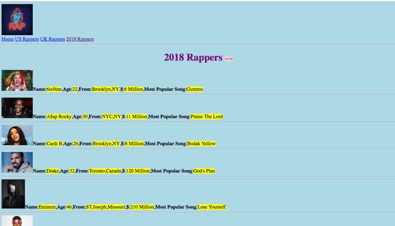

My favourite subject is Web Dev. I enjoy it the most because it gives you a great feeling when you see that you created your very own website.In the first semester I made my own website about rappers, I enjoyed making the website so much and cant wait to make more in the near future. Here is a screenshot from the website that I made:
